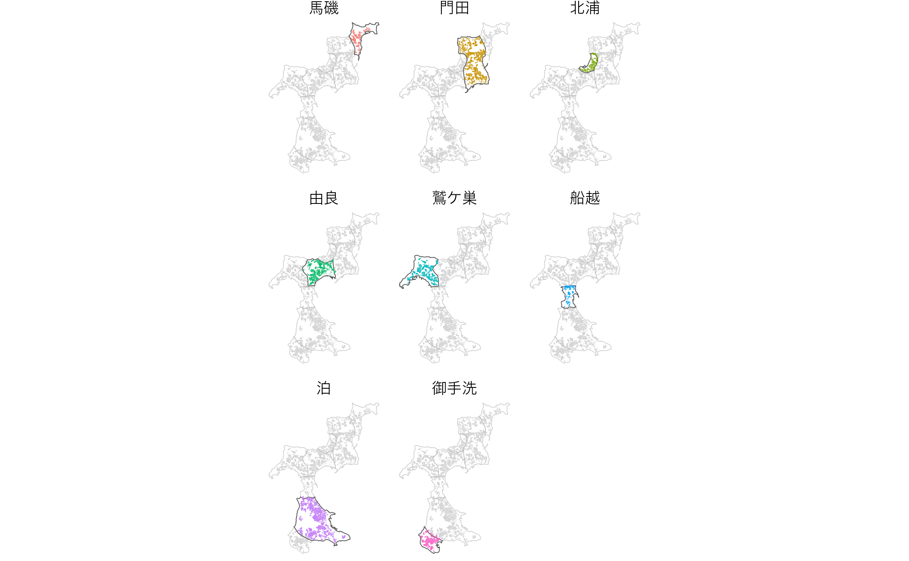

Using gghighlight Package
library(dplyr)
library(forcats)
library(ggplot2)
library(gghighlight)
db <- combine_fude(d, b, city = "松山市", old_village = "興居島", community = "^(?!釣島).*")
db$community <- db$community %>%
mutate(across(c(RCOM_NAME, RCOM_KANA, RCOM_ROMAJI), forcats::fct_rev))
db$fude <- db$fude %>%
mutate(across(c(RCOM_NAME, RCOM_KANA, RCOM_ROMAJI), forcats::fct_rev))
ggplot() +
geom_sf(data = db$community, aes(fill = RCOM_NAME), alpha = 0) +
geom_sf(data = db$fude, aes(fill = RCOM_NAME), linewidth = 0) +
gghighlight() +
facet_wrap(vars(RCOM_NAME)) +
theme_void() +
theme(legend.position = "none",
text = element_text(family = "Hiragino Sans"))
出典：農林水産省「筆ポリゴンデータ（2022年度公開）」および「農業集落境界データ（2020年度）」を加工して作成。
ggplot(data = db$fude, aes(x = a, fill = land_type_jp)) +
geom_histogram(position = "identity", alpha = .5) +
labs(x = "面積（a）",
y = "頻度") +
facet_wrap(vars(RCOM_NAME)) +
labs(fill = "耕地の種類") +
theme_minimal() +
theme(text = element_text(family = "Hiragino Sans"))